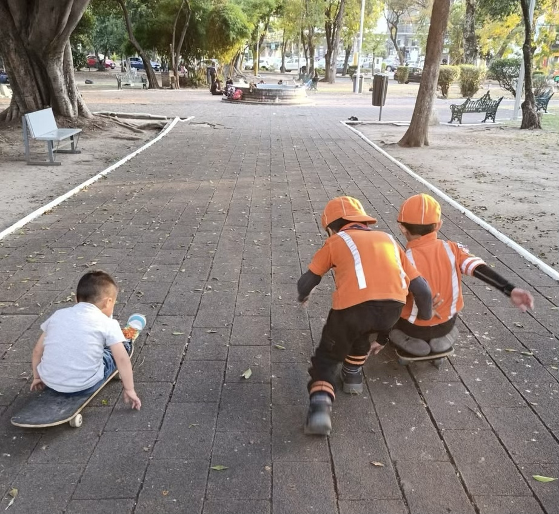
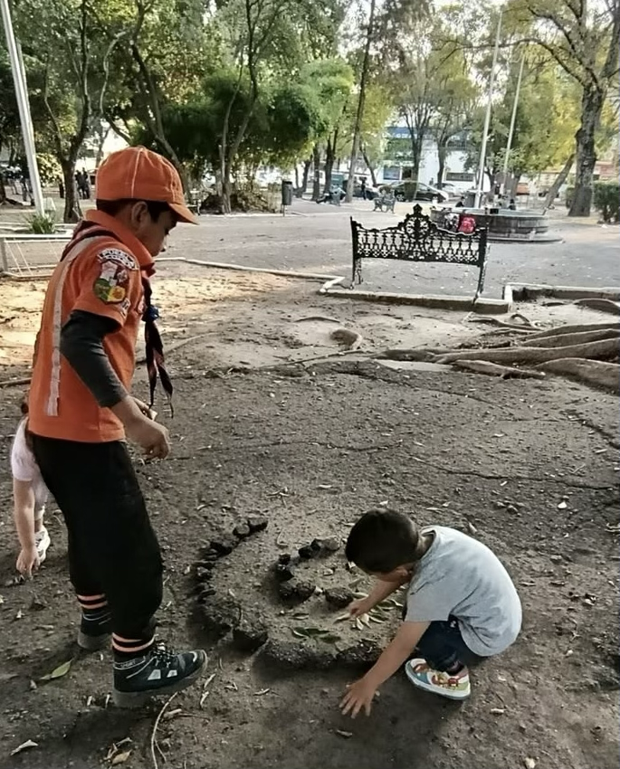
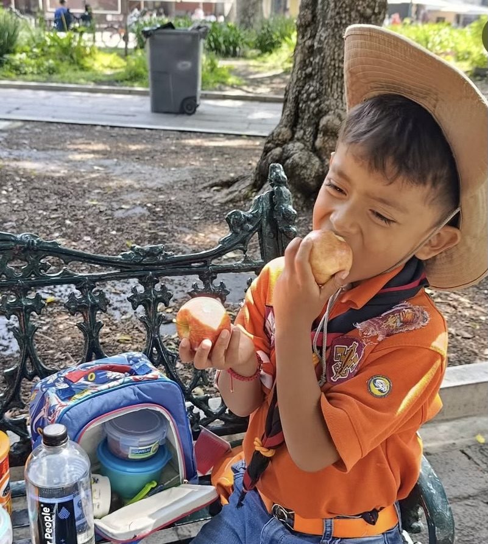
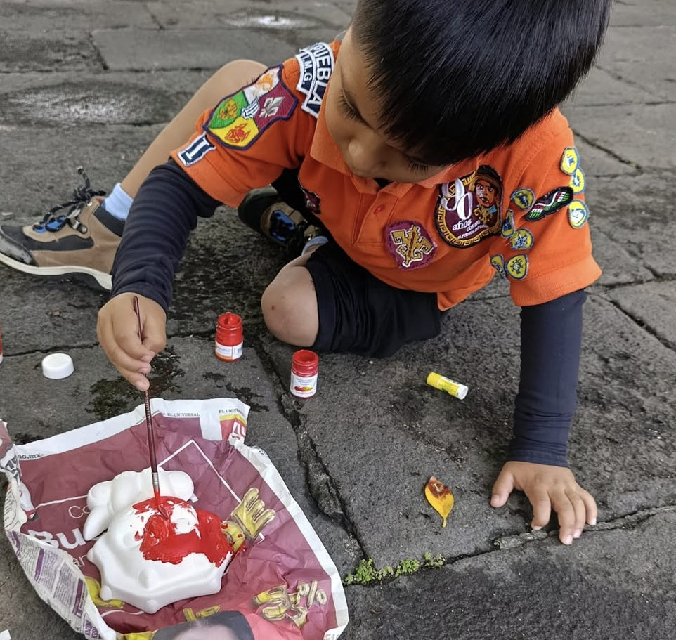

Experiencias


Niños de 3 a 6 años descubriendo el mundo mediante juego, naturaleza y amistad.

La Ronda es la comunidad del escultismo para niños de 3 a 6 años. Aquí los niños aprenden mediante el juego, la exploración y la convivencia con otros niños.
Las actividades están diseñadas para estimular la imaginación, el trabajo en equipo y el contacto con la naturaleza.

Los niños aprenden a colaborar, compartir y resolver problemas jugando en grupo.

Caminatas cortas, descubrimiento de plantas y contacto con el entorno natural.

Manualidades, pintura y actividades creativas para desarrollar la imaginación.
La Ronda se basa en el principio del aprendizaje mediante la experiencia, donde el juego, la exploración y la convivencia permiten a los niños desarrollar habilidades sociales, emocionales y cognitivas.
Desde la perspectiva del escultismo crítico, las actividades buscan promover la autonomía progresiva, la cooperación y la construcción colectiva del conocimiento. El educador acompaña el proceso como mentor, favoreciendo espacios donde los niños puedan observar, preguntar, experimentar y reflexionar sobre su entorno.
El juego simbólico y las experiencias al aire libre permiten que los participantes comprendan su relación con la comunidad y la naturaleza, construyendo valores como el respeto, la solidaridad y el cuidado del entorno.
Los niños realizan caminatas cortas en espacios naturales o parques cercanos donde observan plantas, animales y elementos del paisaje. Durante la actividad se fomenta la curiosidad mediante preguntas y pequeñas misiones de descubrimiento.
Propósito educativo: Desarrollar la observación, el respeto por la naturaleza y la comprensión del entorno como espacio compartido.
A través de dinámicas grupales los niños enfrentan pequeños retos que requieren colaboración para resolverse. Las actividades se centran en la participación colectiva más que en la competencia.
Propósito educativo: Fortalecer habilidades sociales, empatía y resolución de problemas en grupo.
Se realizan actividades de dibujo, construcción con materiales naturales o manualidades simples que permiten a los niños representar sus experiencias dentro de la ronda.
Propósito educativo: Estimular la creatividad, la expresión emocional y el desarrollo de la imaginación.
Los educadores utilizan cuentos, relatos o juegos simbólicos para introducir valores y reflexiones sobre la convivencia, la amistad y el cuidado de los demás.
Propósito educativo: Favorecer el desarrollo del lenguaje, la comprensión de valores y la construcción de significado a través de la narrativa.